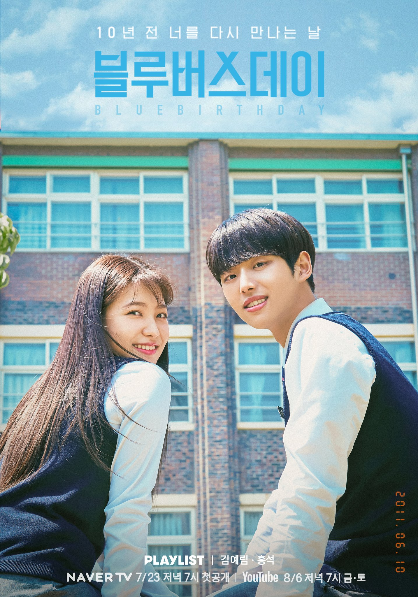

IRENE
1. Women at A Game Company (Web Series)
 Irene merupakan anggota Red Velvet pertama yang debut di dunia seni peran. Ia debut pada tahun 2016 lalu dengan membintangi sebuah web drama berjudul Women at a Game Company. Drama yang diadaptasi dari webtoon ini menceritakan kisah hidup dan percintaan para karyawan di sebuah perusahaan game. Kisahnya bercerita tentang 3 wanita muda yang bekerja di perusahaan mobile game. Bagaimana mereka bekerja susah-payah di industri yang kebanyakan diisi oleh pria ini.
Irene berperan sebagai seorang programmer bernama Areum yang berusaha untuk menciptakan sebuah game meskipun berkali-kali gagal. Web drama Women at a Game Company menuai kesuksesannya dengan ditonton oleh lebih dari 2 juta orang saat drama ini baru mencapai episode kelimanya.
Irene merupakan anggota Red Velvet pertama yang debut di dunia seni peran. Ia debut pada tahun 2016 lalu dengan membintangi sebuah web drama berjudul Women at a Game Company. Drama yang diadaptasi dari webtoon ini menceritakan kisah hidup dan percintaan para karyawan di sebuah perusahaan game. Kisahnya bercerita tentang 3 wanita muda yang bekerja di perusahaan mobile game. Bagaimana mereka bekerja susah-payah di industri yang kebanyakan diisi oleh pria ini.
Irene berperan sebagai seorang programmer bernama Areum yang berusaha untuk menciptakan sebuah game meskipun berkali-kali gagal. Web drama Women at a Game Company menuai kesuksesannya dengan ditonton oleh lebih dari 2 juta orang saat drama ini baru mencapai episode kelimanya.
2. Double Patty (Film)
Irene juga pernah berakting di film berjudul Double Patty, yang dirilis tahun 2021. Hebatnya, di sini Irene dapat peran utama! Beradu akting dengan Shin Seung-ho, film yang disutradarai Baik Seung-hwan ini berkisah tentang perjuangan dua muda-mudi untuk mendapatkan pekerjaan di tengah persaingan Korea yang ketat.
Shin Seung-Ho berperan sebagai Kang Woo-Ram, seorang pria yang berprofesi sebagai atlet kesulitan dalam usahanya jadi atlet pro, ia pun akhirnya siap-siap untuk jadi pegawai biasa. Sedangkan Irene berpersan sebakgai seorang gadis bernama Lee Hyun-ji, bercita-cita jadi pembawa berita, tapi sekarang harus kerja di restoran burger handmade bernama Burger from Heaven. Akankah keduanya bisa mencapai cita-cita mereka? Film ini dapat kalian tonton di aplikasi streaming legal iQIYI.
JOY
1. The Liar and His Lover (Series)
Sampai saat ini, Joy adalah member yang menunjukkan minat paling besar pada dunia akting. Nah, drakor pertama yang pernah dibintangi Joy adalah The Liar and His Lover yang dirilis tahun 2017. Di sini, Joy bahkan dapat peran utama sebagai Yoon So-rim.
Dramanya bercerita tentang komposer musik jenius, Kang Han-gyul, yang bertemu dengan siswanya yang mahir bernyanyi, Yoon So-rim. Han-gyul sebenarnya menyembunyikan identitasnya. Begitu So-rim masuk ke dunia musik secara profesional, pelan-pelan dia menemukan identitas asli Han-gyul, lengkap dengan segala kebohongannya. Selain jalan ceritanya yang seru, OST dalam serial ini juga masuk ke tangga musik, lho!
Diantaranya ada "A Fox" yang dinyanyikan oleh Joy, berhasil menduduki peringkat ke-43 dalam chart Gaon. Selanjutnya ada "I'm Okay" yang dinyanyikan oleh Joy dan Lee Hyun-Woo dengan berada di posisi ke-85. Kalian bisa menonton seris ini di aplikasi streaming legal iQIYI.
2. Tempted (Series)
Pada tahun 2018, Joy kembali membintangi drama berjudul Tempted. Kali ini, ia beradu peran dengan aktor Woo Do Hwan. Drama ini menceritakan kisah romansa para remaja dengan berbagai konflik yang menyertainya.
Woo Do-Hwan yang berperan sebagai Kwon Si-Hyun dengan sengaja mendekati Eun Tae-Hee (Joy) atas suruhan sahabatnya yang sakit hati dan berusaha balas dendam kepada perempuan tersebut. Meskipun awalnya Si-Hyun tidak memiliki perasaan apa pun terhadap Tae-Hee, tapi lambat laun perasaan cinta tumbuh di antara keduanya. Hingga akhirnya hubungan antara Si-Hyun dan sahabatnya pun menjadi semakin renggang.
Selain dibintangi oleh Woo Do-Hwan, series ini juga dibintangi oleh Kim Min-Jae dan Moon Ga-Young. Dari drama ini, Woo Do-Hwan dan Joy berhasil memenangkan penghargaan Frustrator pada MBC Drama Award. Kalian bisa menonton seris ini di aplikasi streaming legal VIU.
YERI
1. Mint Condition (Web Series)
Menyusul kedua kakaknya, maknae Red Velvet, yaitu Yeri pun ikut terjun ke dunia akting dengan membintangi sebuah drama stage tvN berjudul Mint Condition pada bulan Maret lalu.
Meskipun bukan menjadi pemeran utama, namun akting dari Yeri nyatanya sukses menuai respons positif dari para penonton. Mereka menilai Yeri berhasil membawakan karakter yang ia perankan dengan sangat baik. Mint Condition menceritakan tentang seorang pria berusia 60 tahun bernama
Hyun Chul yang tiba-tiba berubah menjadi pemuda berusia 20 tahun. Yeri berperan sebagai Hong Chae Ri, seorang perawat klinik radiologi 88 yang berusaha untuk menyembunyikan Hyun Chul. Tak hanya berperilaku baik, Hong Chae Ri juga disenangi oleh para pasien di klinik tersebut karena kepribadiannya yang supel dan ramah kepada semua orang
2. Blue Birthday (Web Series)
Blue Birthday merupakan sebuah web drama yang diproduksi oleh Playlist Studio. Kali ini, mereka menggaet Yeri Red Velvet untuk menjadi pemeran utama dalam drama ini. Yeri memerankan sosok Oh Ha Rin, seorang wanita berusia 28 tahun yang kehilangan cinta pertamanya sepuluh tahun lalu saat ia masih duduk di bangku SMA.
Suatu hari, Oh Ha Rin menemukan foto misterius yang diambil oleh Ji Seo Joon, cinta pertamanya yang telah meninggal. Dengan foto tersebut, secara misterius ia bisa kembali ke masa lalu saat mereka masih SMA. Oh Ha Rin pun berusaha mati-matian untuk mengubah takdir agar Ji Seo Joon tetap hidup. Series ini wajib kalian tonton karena alur ceritanya begitu unik dan seru! Kalian bisa menonton seris ini di aplikasi streaming legal WeTV.